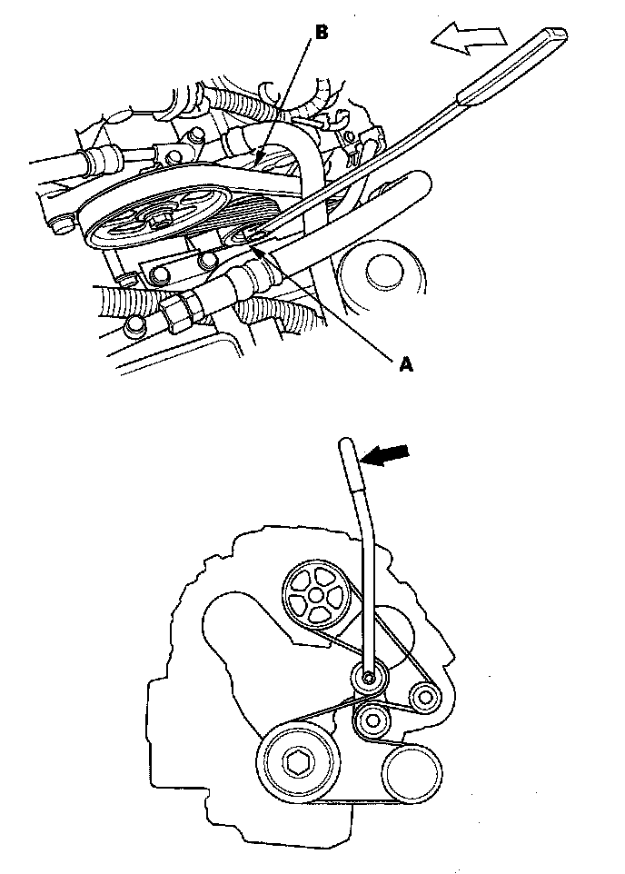

Drive Belt: Service and Repair
Drive Belt ReplacementSpecial Tools Required
Belt tension release tool Snap-on YA9317 or equivalent, commercially available

1. Move the auto-tensioner (A) using the belt tension release tool to relieve tension from the drive belt (B), then remove the drive belt.
2. Install the new belt in the reverse order of removal.